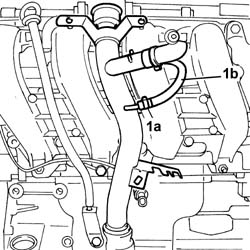
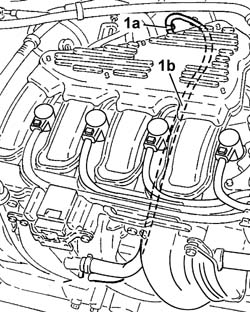

1080D26 idling engine oil vapour inlet line - r r
- Path
- Procedures > 10 ENGINE > 1080 EMISSION CONTROL SYSTEM > 1080D crankcase vapour/gas recirculation system > 1080D26 idling engine oil vapour inlet line - r r
- Kind
- repair procedure (removal / refitting; the operation number is the code)
- Applies to
- all engines; all production periods
- Interactive page
- https://sloeber94.github.io/elrnDB-fDbl/en/#/2584369
Applies to: all engines; all production periods
 Removing
Removing
 Refitting
RefittingPlace the car on the ramp.
Disconnect the battery negative terminal.
 | Name | Connector |
|---|---|---|
- | Battery | A1 |
1048A32 sleeve from air cleaner to intake manifold - r + r
7055B54 under-engine guard - r r
Raise the car on the lift
1. Open clamps (1a) and disconnect oil vapour separator pipe (1b), then lower the car.

Applies to: all engines; all production periods
1. Open retaining band (1a) on the air intake chamber and remove idle oil vapour intake pipe (1b).

Applies to: all engines; all production periods
Refitting
RemovingPlace the idle oil vapour inlet pipe back in its housing and secure it using the bands.
Raise the lift and secure the pipe to the engine oil filler fitting with a band.
7055B54 under-engine guard - r r
1048A32 sleeve from air cleaner to intake manifold - r + r
Connect the battery negative terminal.
| Name | Connector |
|---|---|---|
- | Battery | A1 |
Remove the car from the ramps.